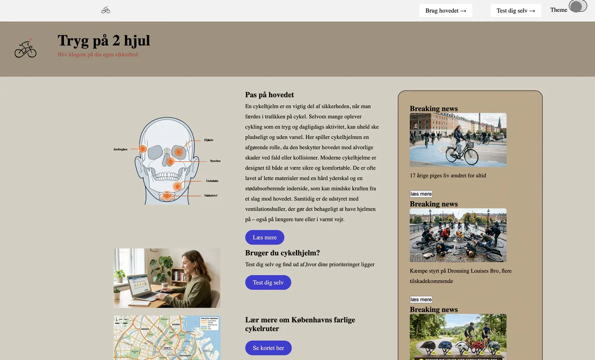
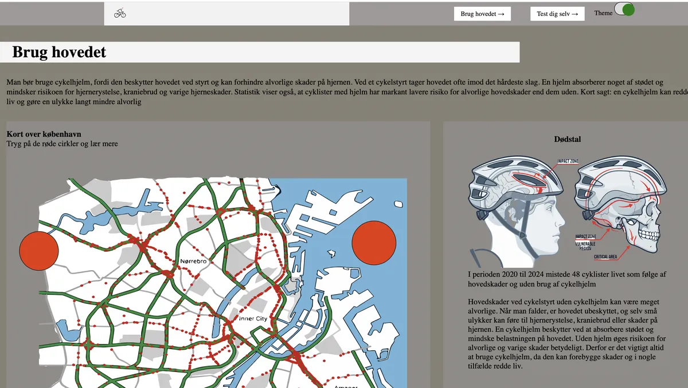
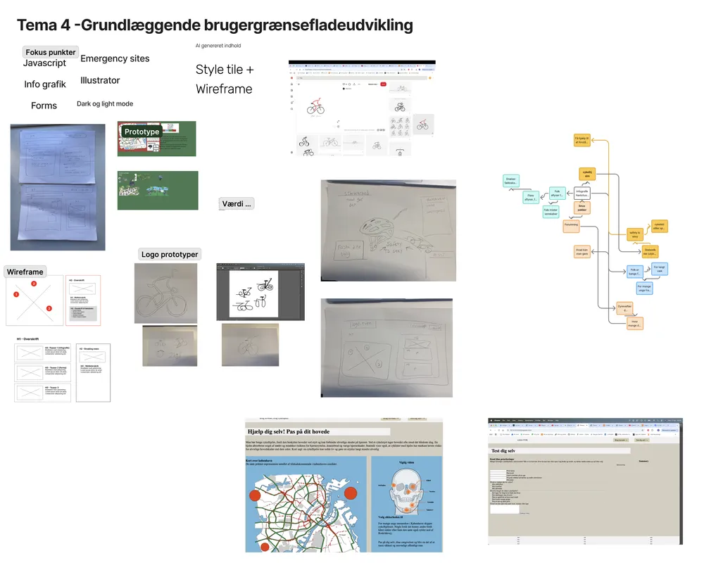

T4 Grundlæggende brugergrænsefladeudvikling
I tema 4 lærte vi at udvikle en interaktiv emergency site med fokus på både design, formidling og implementering af forskellige funktionelle elementer. Gennem temaet arbejdede vi med at skabe en brugervenlig og overskuelig løsning, hvor information kunne præsenteres klart og effektivt. Der var særligt fokus på anvendelsen af forskellige formularer (forms), implementering af light og dark mode for at forbedre brugeroplevelsen samt brugen af popovers til at vise relevant information på en interaktiv måde.

Opgave, proces og udførsel
Vores emergency site blev lavet ud fra et fundament. Herefter skulle vi designe og implementer udvalgte elementer, der skulle inddrages på vores site. Jeg arbejdede med UI-design, wireframes og styletiles for at skabe et design, der understøttede en nødsituation og lærte at lave en infografik i Illustrator og gøre den interaktiv med JavaScript. Jeg blev introduceret til input elementer som: number, firstname, mail og checkbox.
I processen lærte jeg om Illustrator, brug af JavaScript. Jeg fik en forståelse af brugen og funktionen. Jeg fik fortsat erfaring med at udvikle responsive sider og strukturere kode i HTML, CSS og JavaScript. Mit endelige design havde fokus på neutrale farver, en mere alvorlig tone og nogle skarpe kanter, for at understøtte nødsituationen.

Procesdokumentation
